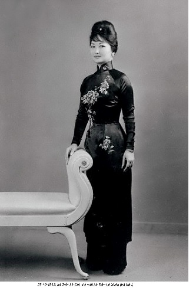
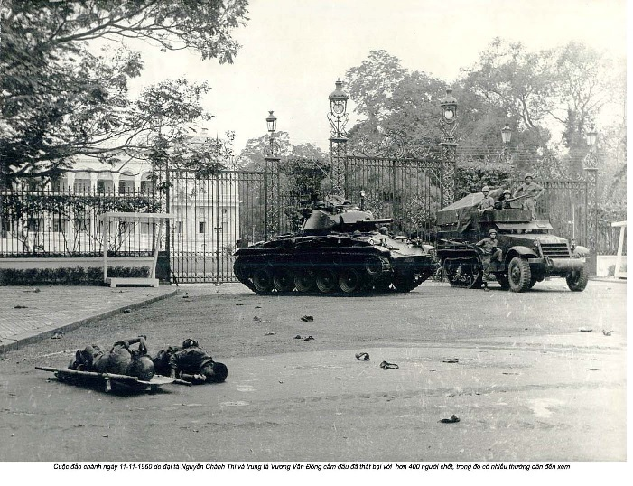
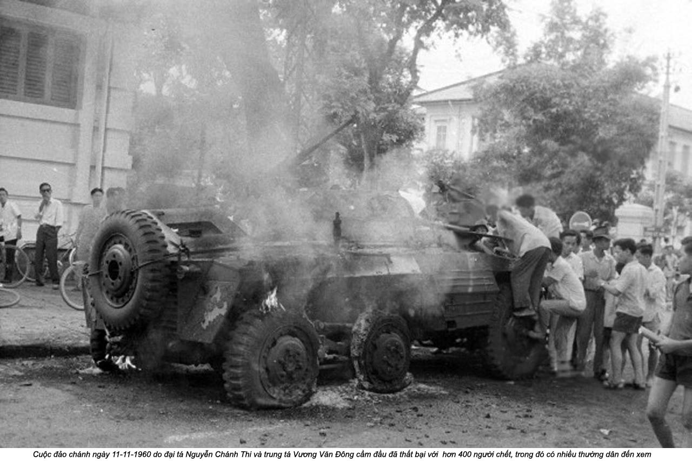

ia đình ông bà Nhu đã dọn vào Dinh Độc Lập vào tháng Tư năm 1955, nhưng không có bà Nhu vì bà hiện vẫn đang ở Hồng Kông. Bà Nhu sống khá thoải mái. Bà được trao một căn phòng trong nữ tu viện Công giáo, có khá nhiều thời gian để trầm tư mặc tưởng và học tiếng Anh. Môi trường lai đã quen thuộc với bà. Hồng Kông là sự kết hợp giữa Trung Quốc và Anh Quốc, và mặc dù bà đã quen với một sự trộn lẫn văn hóa khác, Việt và Pháp, sự pha trộn Đông - Tây vẫn tạo cảm giác thân quen và dễ chịu. Các sơ ân cần, cũng như các em học sinh dễ thương ngoan ngoãn mỗi khi xếp hàng vào lớp và ra khỏi lớp đều dành một nụ cười bẽn lẽn cho vị khách thanh lịch đứng giữa chúng. Bà Nhu dành buổi sáng học tiếng Anh và đi bộ loanh quanh những khoảnh hoa hình ô van trong khu vườn của tu viện. Những buổi chiều của bà trôi qua một cách chậm chạp hơn với những giấc ngủ ngắn và việc đọc sách. Bà Nhu sử dụng những giờ tĩnh lặng xa gia đình để suy ngẫm về những việc làm của bà trong sáu tháng đã qua. Những gì mà bà đã xoay xở để đạt được quả thật là một kỳ công! Cuộc mít tinh đã bùng nổ thành một làn sóng ủng hộ thật sự dành cho ông Diệm. Sự thể hiện táo bạo là điều mà bà Nhu biết mình có thể làm, nhưng với người khác, đó là một điều đáng ngạc nhiên. Mặc dù có lẽ với ý định quở phạt, theo cách nghĩ của bà Nhu, sự trục xuất qua Hồng Kông này chứng minh rằng sức ảnh hưởng của bà đã được nhận ra.
Có lẽ ông Nhu và ba người con dọn vào Dinh trong thời gian vợ ông vắng mặt là vì ông muốn gần gũi với anh trai hơn, hoặc có lẽ ông hy vọng điều đó sẽ giữ cho gia đình ông an toàn. Nếu vậy ông đã lầm. Trong những đêm đầu tiên của họ ở ngôi nhà mới, một cuộc tấn công giữa đêm của băng Bình Xuyên vào dinh phủ đã đánh bật đôi bức rèm đổ sộ từ những cửa sổ mái trên tầng hai. Một mớ bùng nhùng những vải, lụa, gỗ, và vữa tường đã từ độ cao ba mét rơi xuống bé Quỳnh, con trai ba tuổi của ông Nhu. Nó gần như chết ngạt trước khi được cứu thoát và hồi tỉnh.
Bà Nhu kinh hãi khi nhận được tin tức. Nhưng chẳng những không coi tai nạn xém chết người như một điềm họa sắp xảy đến, bà xem việc gia đình dọn vào Dinh ở là một bước tiến. Họ đã dọn từ những ô cửa sổ có chấn song và mái tôn của Bệnh viện Saint Pierre vốn kêu lộp độp mỗi khi trời mưa vào một dãy phòng nằm ở cuối đại sảnh dẫn đến phòng của vị Tổng thống Việt Nam Cộng hòa.
Trước khi ông Diệm dọn vào và đổi tên thành Dinh Độc Lập, tòa nhà trát vữa vàng đã được gọi là Palais Norodom, đặt theo tên quốc vương Campuchia láng giềng và xây trên một đại lộ cùng tên. Dinh được dùng làm văn phòng và nơi ở của vị toàn quyền Pháp ở Đông Dương - một dạng Nhà Trắng thực dân Pháp. Được thiết kế bởi kiến trúc sư người Pháp Achille Antoine Hermitte, người đã xây dựng tòa thị chính vương giả của Hồng Kông, vẻ hùng vĩ của nó có ý chứng tỏ với người bản xứ quyền lực và sự giàu có vô cùng của Pháp quốc. Đá granite lát nền Dinh đã được nhập khẩu từ Pháp, cũng như những khối đá trắng mượt để chạm trổ những hoa văn trang trí mặt tiền. Chỉ những mặt nền ở gian trung tâm là bằng đá cẩm thạch; phần còn lại được lát gạch vuông, một sự nhượng bộ với khí hậu nhiệt đới của Sài Gòn. Dinh có hình chữ T, với hai dãy cửa sổ vòm cong thanh nhã dọc theo mặt trước, nhìn ra thành phố. Ở tầng một là những văn phòng và phòng tiếp tân chính thức; tầng hai là nơi ở của ngài Tổng thống và những căn phòng của gia đình ông Nhu. Phòng tiếp tân lớn và những phòng khiêu vũ liển kề nhau làm thành chân hình chữ T và nhô ra mảnh vườn cây lá sum suê.
Khi bà Nhu trở lại, bà thấy một căn phòng mà bà rất đỗi ưa thích: những bức rèm nặng trĩu đã được lắp lại và chăn gối trên giường làm từ lông vũ, ga trải giường bằng lụa với một tấm màn trướng lớn, thảm trải sàn đẹp. Đồ đạc cực kỳ bóng loáng. Một đội quân giúp việc nhà sẵn sàng túc trực để đánh bóng lại ngay khi nó bị ố bẩn. Bà Nhu có thể mở toang những cánh cửa kiểu Pháp nhìn ra ban công rộng vào buổi sáng sớm để hít thở làn gió nhẹ. Mùi đồ ăn cay không còn suốt ngày vương vất qua cửa sổ như trước đây trong căn hộ ở ngang mặt đường của họ. Mùi dầu rán và gừng, thịt và tỏi ở lại trong nhà bếp, chỉ bay ra từ những chiếc đĩa đầy ắp được phục vụ trong phòng ăn vào giờ ăn. Bà Nhu hiểu rằng tất cả những điều này là do một cái gật đầu của ông Diệm, anh chồng bà, thừa nhận những đóng góp của vợ chồng bà.
Nhưng bà Nhu không thấy hạnh phúc trong Dinh. Chí ít là ban đầu. Bà đang tìm kiếm ý nghĩa chân chính trong đời mình, và bà phải mất một thời gian trước khi nhìn thấy một bước tiến rõ ràng.
Trong vài năm đầu ở Dinh, Ngô Đình Diệm và chế độ gia đình trị của ông đã làm được rất nhiều việc. Một triệu dân lánh nạn đã được an cư ở miền Nam. Sản lượng gạo đã tăng từ 2,8 lên tới 4,6 triệu tấn. Sản lượng cao su tăng từ 66.000 lên 79.000 tấn. Những chương trình tín dụng nông nghiệp và cải cách điền địa đã phá bỏ những đồn điền thời thực dân, giúp người dân đầu tư công sức vào đồng ruộng của mình và nỗ lực đa dạng hóa cầy trồng. Ba quốc lộ quan trọng đã được hoàn thành, hai trường đại học mới được thành lập, và sản lượng điện năng tảng gấp đôi đã đẩy nhanh tốc độ tái thiết cần kíp sau chín năm chiến tranh giành độc lập. Năm mươi mốt xí nghiệp sản xuất mới đã được xây dựng, nhiều nhất là trong ngành dệt, ngành mà người Pháp đã luôn luôn kiểm soát. Chi phí nhập khẩu của miền Nam Việt Nam đã giảm hơn 40 triệu Mỹ kim một năm, số tiền đáng kể với một quốc gia hãy còn rất nghèo. Nhưng tất cả những thành tựu này đã đạt được dưới sự che chở của viện trợ Hoa Kỳ - lên tới 150 triệu Mỹ kim mỗi năm trong năm năm, từ 1955 đến 1960. Con số này nghe có vẻ nhỏ nếu tính theo thời giá đô la hiện nay, nhưng đó là gấn 15 phần trăm ngân sách viện trợ của Hoa Kỳ cho việc phát triển kinh tế và kỹ thuật của tất cả các quốc gia.(1)
Tin tức từ Sài Gòn đặc biệt đáng khích lệ khi so sánh với những thông tin ảm đạm có thể thu thập được về điều kiện sống dưới chế độ Cộng sản ở miền Bắc, vốn chịu đựng lũ lụt và đói kém triền miên. Lối khoa trương đậm nét dân tộc chủ nghĩa của Việt Minh đã quay ngoắt về phía tả sau Hiệp định Genève, phần nào vì Hà Nội đang nhận sự giúp đỡ từ Trung Hoa của Mao. Nhưng sự chuyển biến này bao nhiêu phần do áp lực từ Trung Hoa và bao nhiêu phần do khả năng lãnh đạo của Việt Minh để cuối cùng nó đã rũ bỏ mọi sự vờ vịt rằng nó là cái gì khác hơn một Đảng Cộng sản trong thực chất? Để củng cố quyền hành, những người Cộng sản phải đập tan quyền lực truyền thống của tầng lớp cai trị. Những chiến dịch “đấu tố’ để thanh trừng khỏi hàng ngũ Việt Minh mọi thành phần “xấu” (tức giai cấp thượng lưu). Dân chúng được yêu cầu tố giác những hàng xóm, thậm chí các thành viên gia đình, và tình hình này đã dễ dàng bị lợi dụng cho những trò trả thù. Có những vụ xét xử, hành quyết và một chương trình tái phân phối ruộng đất gây đổ vỡ tan hoang. Không giống với những khoảnh đất rộng lớn ở miền Nam, ruộng đồng ở miền Bắc tương đối nhỏ hẹp. Ruộng đất được đo theo đơn vị gọi là mẫu - Ở miền Nam một người phải có năm mươi mẫu để được coi là địa chủ trong khi ở miền Bắc thì chỉ cần năm. Mức độ chênh lệch giữa người thuộc giai cấp này với giai cấp khác rất nhỏ bé, điều đó làm cho sự phân phối lại đất đai trở thành chuyện đau đầu ngay cả với những điển chủ quy mô nhỏ. Nó cũng khiến cho những người hàng xóm quay ra chống đối nhau; người ta tìm cách hãm hại lẫn nhau vì những mối lợi nhỏ nhất.
Nhưng với tất cả những diễn văn say sưa của mình, ông Diệm cũng không lãnh đạo một quốc gia tự do. Bất kỳ cái gì giống với một nền dân chủ đích thực đơn giản chỉ là vẻ ngoài lòe loẹt giả dối. Theo những điều khoản của Hiệp định Genève năm 1954, sự phân chia Việt Nam thành hai quốc gia Nam - Bắc với các thủ đô lần lượt là Sài Gòn và Hà Nội chỉ là tạm thời. Một cuộc Tổng Tuyển cử được dự định sẽ diễn ra vào năm 1956 ở cả hai miền đất nước để tái thống nhất chúng dưới sự lãnh đạo của một Tổng thống được chọn. Nhưng chính quyền Việt Nam Cộng hòa của Ngô Đình Diệm đã từ chối tổ chức Tổng tuyển cử với lý do rằng chính quyền Việt Nam Cộng hòa của Ngô Đình Diệm đã không thật sự ký vào Hiệp định Genève; họ đã chỉ được ban cho một địa vị quan sát viên, chế độ ông Diệm cũng cáo buộc rằng những người Cộng sản không có khả năng tham gia một cuộc bầu cử trung thực. Không chỉ có những người miền Bắc sống dưới chế độ Cộng sản đối mặt với vấn đề này; miền Nam vẫn là nơi ở của những du kích quân có vũ trang, cựu Việt Minh, những người Cộng sản trung thành và rút vào bí mật, chờ thời cơ để lại trỗi dậy. Chế độ miền Nam có một lý do tốt hơn nữa để không tổ chức bầu cử: Ông Diệm sẽ thua. Ông không cách gì có thể thắng được người đã dẫn dắt quân đội Việt Nam đánh bại người Pháp và đi đến nền độc lập. Hồ Chí Minh sẽ chiến thắng mọi cuộc tranh chấp về lòng mến mộ.
Vào tháng Mười năm 1955, ông Nhu đã giúp tổ chức một cuộc trưng cầu dân ý ở miền Nam Việt Nam cho ông Diệm để truất phế cựu vương Bảo Đại mãi mãi. Trong một chiến thắng long trời lở đất, ông Diệm đã trút bỏ lớp vỏ bọc của mình như là Thủ tướng được Bảo Đại bổ nhiệm và trở thành quốc trưởng chính thức và Tổng thống đầu tiên của Việt Nam Cộng hòa. Sự chênh lệch hoàn toàn áp đảo - gần 6 triệu so với 63.000. Các báo cáo rò rỉ từ những điểm bỏ phiếu tiết lộ những thủ đoạn đe dọa và áp bức. Những phong bì đỏ, biểu thị một lá phiếu cho ông Diệm, đã được lèn vào những thùng phiếu dưới cặp mắt những người giám sát của ông Nhu, và những kẻ bất tuân có nguy cơ bị ăn đòn. Ồng Diệm được 98 phần trăm số phiếu, nhưng chiến thắng ở Sài Gòn của ông thậm chí còn gây sốc hơn: con số 605.025 phiếu của ông vượt qua số cử tri được đăng ký của thành phố đến hơn một phần ba.(2)
Bà Nhu đã được bầu vào Quốc hội vào ngày 4 tháng Ba năm 1956. Bà cùng với 122 thành viên khác, hầu hết là nam giới, nằm trong cơ quan lập pháp của chính quyền mới. Bà Nhu phủ nhận việc chạy đua vào chức vụ này là ý của bà, khăng khăng rằng một người nặc danh đã đề cử tên bà để đại diện cho những nạn dân miền Bắc mà bà đã bênh vực một cách “anh hùng”, và bà chế giễu cái ý tưởng rằng bất kỳ cái gì khác ngoài niềm cảm phục thật sự đã thúc đẩy việc bầu cho bà.(3) Tuy vậy, có một kiểu mẫu dễ nhận thấy đến mức khó chối cãi. Những người nắm quyền kiểm soát Việt Nam Cộng hòa hoặc là thành viên gia đình họ Ngô hoặc có quan hệ với họ qua hôn nhân.
Cha của bà Nhu, Trần Văn Chương, được giao phụ trách lĩnh vực kinh tế và tài chính; sau đó ông và vợ được bổ nhiệm làm nhà ngoại giao và được phái đến Hoa Kỳ. Ông Chương là đại sứ Việt Nam Cộng hòa của chế độ ông Diệm, trong khi bà Chương là quan sát viên tại Liên Hiệp Quốc của Việt Nam Cộng hòa. Chú của bà Nhu phụ trách đối ngoại, em họ của cha bà làm Phó Tổng thống của ông Diệm, và chồng của chị gái bà, Nguyễn Văn Châu, là một trong những cố vấn được tín cẩn nhất của ông Diệm trong một thời gian. Thanh thế mới của bà Nhu thậm chí đã đảm bảo một chiếc ghế cho em trai của bà, ông Khiêm. Em trai bà đã được nuông chiều, bao bọc và hư hỏng trong thời niên thiếu, và có lẽ vì vậy, ông đã là một sinh viên hải ngoại rất tệ. Ông theo học một trường ở Paris trong một thời gian nhưng bỏ học trước khi lấy bằng, sau đó cũng không hoàn tất nổi các lớp hàm thụ về ngành luật. Khi người Pháp rời khỏi Việt Nam năm 1954, ông Khiêm đang có một cuộc sống phóng túng du thủ du thực ở một vùng duyên hải Algerie cùng một người vợ Đức. Sự đời thật tréo ngoe lắm nỗi: Đứa con trai mà ông bà Chương luôn nâng niu ấp ủ trở thành một nỗi thất vọng đến vậy, và người chị giữa của ông có lẽ là người đã làm xoay chuyển tình thế bằng cách gọi ông trở về Việt Nam và bổ nhiệm làm phát ngôn viên của Dinh Tổng thống. Khi vị tân Đệ nhất Phu nhân Việt Nam Cộng hòa vẫy tay, ông Khiêm chạy đến mau chóng, bỏ lại người vợ của mình phía sau. Việc xoay xở được một điều mà ngay cả mẹ cũng không thể làm ắt hẳn đã khiến bà Nhu rất lấy làm thỏa mãn.
Bên cạnh bản chất gia đình trị, chế độ họ Ngô còn phân biệt đối xử với những người không Công giáo. Thành kiến này có thể được giải thích hợp lý từ bối cảnh của những năm tháng tuổi trẻ - cộng đồng Thiên Chúa giáo đã cung cấp cho ông Diệm và Nhu một khối cử tri chống Cộng nhiệt thành - nhưng anh em họ Ngô đã đẩy nó đi tới chỗ cực đoan. Có những câu chuyện về những người cải sang đạo Công giáo chỉ để tranh thủ sự ủng hộ chính trị và được thăng tiến. Rào giậu xung quanh với các thành viên gia đình và những tín đồ Công giáo cùng khuynh hướng đồng nghĩa với chế độ này đang tự cách ly nó khỏi những người có quan điểm thật sự khác biệt. Nhưng đời sống chính trị ở Việt Nam luôn là như vậy ở một chừng mực nào đó. Nhiều thế kỷ trải qua nền quân chủ Việt và sự cai trị của thực dân Pháp đã để lại một di sản chính trị coi trọng sự tuân phục, và dưới thời Diệm, sự trung thành triệt để với một tư duy độc nhất càng được củng cố. Có một ý thức đã hằn sâu giữa những chính trị gia rằng sự bất đồng hoặc xa rời nguyên trạng, thậm chí là việc áp dụng sáng kiến, đưa đến rủi ro cho sự nghiệp. Những cố vấn Mỹ ở miền Nam Việt Nam đã gây áp lực với Diệm để mở cửa chính quyền của ông và tạo ra một môi trường đa nguyên chính trị, nhưng Diệm đã cự tuyệt. Có quá nhiều thứ để đánh mất. Cuộc hành trình đến với nền dân chủ sẽ là một hành trình bắt buộc và câm lặng. Chế độ nói nó cần sự ổn định trước khi nó có thể xây dựng một nhà nước mạnh mẽ. Bà Nhu đã biện luận những khuynh hướng hẹp hòi của nhà họ Ngô với ký giả người Úc Denis Warner, khi giải thích, “Nếu chúng tôi mở toang cửa sổ, không chỉ có ánh mặt trời, mà nhiều thứ tồi tệ cũng sẽ bay vào”.
Một sự bất dung hòa đích thực sớm đã nổi bật lên giữa hình ảnh ông Diệm như một con người đạo đức chính trực và bầu không khí sợ hãi đã bắt đầu tràn ngập khắp Sài Gòn. Những người không hợp tác với chế độ đã bị bịt miệng bằng cách này hay cách khác. Họ có thể bị gởi đi xa, tới những vùng thân Cộng sản xa xôi hẻo lánh, nơi họ có thể bị giết hại. Họ có thể bị cảnh sát chìm bắt bớ và đánh đập hoặc bị giam cầm đến khi đã học được bài học của mình. Những tin đồn về sự tra tấn và bỏ tù lan truyền khắp nơi. Người ta không ngớt thầm thì bàn tán về cái tên của em trai ông Diệm: Ngô Đình Nhu.
John Phạm, vệ sĩ của ông Diệm, xác nhận nhiều nét thánh thiện đã được mô tả trong tiểu sử của ông Diệm. Ngài Tổng thống có một cuộc sống khổ hạnh như thầy tu. Những căn phòng riêng của ông trên tầng hai tòa cổ Dinh của Pháp có sàn gỗ trơ trụi, và giường ngủ của ông là một chiếc đệm rơm. Chỗ ngủ của ông liền kề văn phòng, nơi ông trải qua hầu hết thời gian khi thức. Đồ đạc bao gồm một chiếc bàn cà phê tròn bằng gỗ và một chiếc ghế da mòn vẹt. Ông Diệm ăn tại bàn giấy trong khi làm việc qua những bữa sáng, trưa, và tối. Vào buổi sáng ông uống cà phê với đường và thường ăn cháo với cá kho (cá nhỏ).(4) Những bữa trưa và tối của ông cũng rất đơn giản, gồm cơm và rau cải, thịt heo ba chỉ rán, hoặc một loại cá nào đó. Để tráng miệng, ông dùng hai trái bắp với đường. Ồng Diệm có những sở thích giản dị; ông ăn gần như cùng một thực đơn trong mọi ngày với chỉ món cá thay đổi. Ông không uống rượu vang hay whisky, chỉ có trà nóng, nhưng ông hút thuốc liên tục, vừa tắt điếu này đã lại đốt điếu khác. Ông Diệm bập bập từng hơi ngắn và chờ cho tàn thuốc dài ra trước khi rảy vào gạt. Ông hút nhiều đến độ những ngón tay ám khói vàng ệch.
Ông Diệm ăn một mình trong hầu hết thời gian; những bữa ăn và giấc ngủ của ông rất thất thường vì giờ giấc làm việc của ông. Đôi khi ông nhịn ăn cho đến 4 giờ sáng. Từ chỗ của mình, ông có thể kéo một cái chuông để gọi nhà bếp. Hai hoặc ba người hầu được phân công túc trực suốt ngày đêm, nhưng ông luôn luôn rất rộng lượng với những người làm việc cho mình. John kể với tôi rằng ông Diệm thậm chí đã dùng tiền lương của mình cho các nạn dân để giúp họ ổn định cuộc sống.
Là người tận hiến cuộc đời cho quốc gia, ông Diệm không có thì giờ cho những mối quan hệ cá nhân bên ngoài gia đình mình. Ông là người đàn ông độc thân, nhưng từ này ngụ ý một lối sống thảnh thơi vô tư lự vốn hoàn toàn không có trong tính cách của ngài Tổng thống Việt Nam Cộng hòa. Sự quyến luyến cá nhân duy nhất của ông là với khu vườn. Sau khi làm việc, ông Diệm sẽ tản bộ qua những mảnh vườn tược của Dinh. Khi những chức sắc ngoại quốc thăm viếng, mang theo trái cây và những thứ cao lương mỹ vị như một món quà từ xứ sở họ, ông Diệm để dành phần ngon cho những vệ sĩ của mình; ông chỉ kêu họ đưa lại hạt để ông trồng chúng trong khu vườn của mình.
Người phụ nữ duy nhất ngài Tổng thống gặp gỡ thường xuyên sống cách ông có một vài cánh cửa: vợ em trai ông, bà Nhu. Có một tin đồn rằng khi còn trẻ, ông Diệm đã đính hôn với một cô gái ở quê nhà ngoài Huế nhưng mọi chuyện đã chấm dứt khi ông quyết định theo đuổi hoạt động chính trị thay vì cuộc sống gia đình. Chính trị là một trò chơi nguy hiểm dưới thời Pháp thuộc, nhưng đó dường như vẫn là một lý do kém thuyết phục để không lấy vợ. Chánh văn phòng của ông Diệm nghĩ rằng ngài Tổng thống chưa bao giờ có các mối quan hệ giới tính, và một bức tiểu sử sơ lược năm 1955 của ông Diệm trên tạp chí Time cho hay rằng ông đã “có lời thề sống trinh bạch từ lâu”. Sự mô tả tính cách ông Diệm là “nhút nhát” và “không thoải mái” khi ở với phụ nữ có thể đã xui khiến vị chánh văn phòng của ông tiết lộ rằng ngài Tổng thống thích giữ “những người đàn ông ưa nhìn xung quanh ông” thay vì phụ nữ.(5)
Sự thật vẫn là ông Diệm cần một nữ gia chủ để giúp ông trong các nghĩa vụ xã giao, một người với sự duyên dáng trong giao tế và một nụ cười xinh xắn. Ông Diệm có thể đã lựa chọn một trong những em gái hoặc vợ của các anh hay em trai ông. Nhưng ông đã chọn bà Nhu.
Bà là người quan hệ rộng rãi, xinh đẹp, và thông minh, nhưng quan trọng hơn hết, bà đã có sẵn ở đó. Có lẽ bà Nhu đã luôn luôn dự định kết quả này. Vì gia đình ông bà Nhu đã sống trong Dinh, có vẻ như là điều khôn ngoan khi giữ cho vợ của em trai ông luôn bận rộn. Vị chánh văn phòng - người đã nhận xét rằng ông Diệm thích có những người đàn ông điển trai làm việc cho mình, đã mô tả mối quan hệ của ông Diệm với bà Nhu là khá thoải mái: “Bà duyên dáng, nói chuyện với ông, làm ông vơi bớt căng thẳng, tranh luận với ông, châm chọc ông và như một người vợ Việt Nam, bà quán xuyến mọi việc trong gia đình”. Ông ví mối quan hệ của Tổng thống Diệm với bà Nhu giống như giữa Hitler và Eva Braun vậy.(6)
Vệ sĩ John Phạm không đồng ý. Ông kể với tôi rằng ông Diệm không hoàn toàn thích bà Nhu. Ông nghĩ cô em dâu của mình “trông như một quý cô nóng bỏng, quá huênh hoang”. Mọi điều về tính cách phô trương của bà đều trái ngược với bản tính trầm lặng của ông Diệm, nhưng ông vẫn kiên nhẫn chịu đựng bà. Ông nhận ra rằng ông mắc nợ cậu em Nhu về tính cách thực tế chính trị của ông - về việc làm những điều cần phải làm nhưng có thể phương hại tới những chuẩn mực đạo đức khắt khe của ông. Theo quan điểm của John Phạm, ông Diệm không nói toạc những gì không hay về bà Nhu vì ông không muốn gây phiền hà cho em trai mình.
John nhớ lại với một nụ cười về cái lần ông nhìn thấy ông Diệm không thể dằn lòng. Đó là vào tháng Mười năm 1956. Một tấm hình sắp sửa được chụp trước Dinh với tất cả những thành viên của chính phủ. Người thợ chụp ảnh đã mất nhiều thời gian để căn chỉnh mọi thứ đâu vào đó, vì bản thân sự sắp xếp những người đứng xung quanh Tổng thống là cả một sự thương lượng chính trị. Mọi thứ trong hoàn cảnh ngày hôm đó rất đỗi căng thẳng. Bà Nhu thấy mọi người bị xao lãng tâm trí và đã lợi dụng khoảnh khắc này. Bà rón rén đi lên tầng hai của Dinh và đứng vào một trong những ô cửa sổ, xoay xở làm sao để lọt được vào khung hình. Khi tấm hình được rửa và đưa cho vị Tổng thống xem, ông Diệm điên tiết.
Khi tôi hỏi liệu có phải bà ấy không xứng để được xuất hiện trong khung hình, John trông có vẻ bối rối. “Bà ấy luôn muốn quá nhiều, quá nhanh”, ông nói với một cái lắc đầu.
Mặc dù vẫn bị bủa vây bởi sự đấu đá chính trị và những thách thức từ băng Bình Xuyên và những giáo phái tôn giáo, ông Diệm và chế độ mới của ông là những cục cưng của thế giới chống cộng tự do. Hiểu theo nghĩa như vậy, họ có một thể diện ngoại giao rất cao để gìn giữ. Ở Dinh đã diễn ra những bữa tiệc tối và lễ tiếp tần bất tận, bao gồm những bữa tiệc chiêu đãi cấp nhà nước phức tạp dành cho các nhà ngoại giao đến viếng thăm. Những khoảnh vườn trong công viên đằng sau Dinh treo đèn kết hoa, và những lối đi lung linh bởi những lồng đèn giấy. Sau khi những vị khách mời đi hết con dốc đôi dẫn vào sảnh đường, bà Nhu chào đón họ với một nụ cười duyên dáng và chìa bàn tay đeo găng thon thả. Tiếng nhạc Việt truyền thống và những chiếc ly lanh canh họa theo khi bà sánh bước với ông Diệm quanh phòng, hòa lẫn vào giữa các thành viên của ngoại giao đoàn và dừng lại tán gẫu với các vị khách danh dự trước khi ngồi vào chiếc ghế bà chủ tiệc đầy thanh thế và cực kỳ nổi bật tại bàn ăn bài trí trang nhã.
Bà đã thực hiện ngay lập tức những bổn phận của một Đệ nhất Phu nhân, như mở những trường tiểu học mới, tổ chức những cuộc triển lãm hoa, và viếng thăm các trại mồ côi ở khắp miền Nam. Bà Nhu đã sắp xếp một bữa tiệc chiêu đãi khổng lồ tại Dinh cho hơn 1.000 học sinh và đi chu du khắp thế giới trong sứ mệnh ngoại giao. Tại một bữa tiệc tối dành cho gia đình Nhu ở Rangoon được chiêu đãi bởi Thủ tướng Miến Điện, bà đã tán gẫu với vợ của nhà lãnh đạo, bà U Nu, về niềm say mê các loài hoa. Khi bà Nhu đã sẵn sàng rời khỏi Rangoon trên một chuyên cơ không lực Việt Nam bay về lại Sài Gòn, họ nhìn thấy trên máy bay một món quà đặc biệt từ vị nữ chủ nhân: một cây hoa giấy Burma đang trổ nhiều hoa trắng dành cho bà Nhu để bà trồng trong vườn.(7) Ở Bồ Đào Nha, Tây Ban Nha, Pháp, và Áo, bà được đại diện của những hội phụ nữ chào đón. Bà Nhu thậm chí đã bằng cách nào đó gợi cuộc trò chuyện với vị đại biểu Nga tại Liên minh Nghị viện Thế giới khi họ phát hiện từng ngồi gần nhau ở Brazil. Vì đại biểu người Nga, bà Lebedeva, là một phụ nữ chắc nịch được biết đến với cách xử sự lỗ mãng, nhưng bà Nhu đã cuốn hút bà ta vào một cuộc tranh luận ở Pháp về nhu cầu kinh tế của sự đầu tư nước ngoài. Và ở Washington, D.C, nhân một chuyến viếng thăm bán chính thức cùng chồng vào tháng Ba năm 1957, bà Nhu đã được mời ăn trưa ở Thượng viện. Bà quan sát những thượng nghị sĩ tranh giành nhau một chỗ ngồi tốt tại bàn và nhận xét với người ngồi sát bên về cái vẻ cực kỳ trẻ con của nghi thức bữa trưa này. Vị chính khách nghe được lời bình luận của bà và cười xòa là một thượng nghị sĩ trẻ từ Massachusetts, John F. Kennedy.
Nhân viên CIA hộ tống ông bà Nhu, người bạn cũ của họ, Paul Harwood, nhớ lại rằng bà Nhu đã gây một tì vết duy nhất trong một chuyến đi đáng ra đã rất thành công. Bà đã “chè chén say sưa” giữa bao cặp mắt chú ý của Allen Dulles và những nhân sĩ từ Bộ Ngoại giao và Quốc phòng trong một bữa tiệc tối chiêu đãi tại Cầu lạc bộ Alibi, một ngôi nhà gạch ba tầng cách Nhà Trắng vài khối nhà. Tư cách thành viên ở đây vẫn giới hạn trong thành phần tinh túy nhất - năm mươi người quyền lực nhất Washington - và những thành viên mới chỉ được nhận vào sau khi một thành viên cũ chết. Có lẽ bà Nhu đã say sưa quá trớn với thanh thế của mình, vì lẽ đó chồng bà đã không hài lòng với bà. Ông không vui với sự phô bày vẻ yêu kiều, duyên dáng, và sự thông thạo tiếng Anh của vợ. Bà đã là ngôi sao của buổi tối - và ông Nhu ắt hẳn đã coi đó là chuyện nhắm vào cá nhân ông. Theo quan điểm của Harwood, bà “không phải là vấn đề, mà là một chuyện giật gân”.(8)
Ông Nhu có vẻ như đã nghiêng theo quan điểm của những người chỉ trích vợ mình. Những người không thích bà Nhu nói rằng bà đang lợi dụng sự xa lạ với phụ nữ của ông Diệm. Vậy thì còn căn cớ nào nữa để ông phải nghe bà? Bà có thể làm cho bộ ngực phập phồng vì xúc động. Bà có thể đá lông nheo. Ngôn ngữ thân thể của bà hiệu quả đối với ngài Tổng thống, họ nói, hơn cả một kho vũ khí. Bà có những phương chước khác tùy nghi sử dụng mà ông không biết phải đối phó cách nào, như những cơn hờn dỗi và vui giận thất thường. Đồng thời họ buộc tội bà lợi dụng sự nữ tính của mình như một thanh gươm bén, họ nói bà cũng có thể dùng nó như một chiếc khiên để đỡ gạt những luận điệu cho rằng bà mới là người đàn ông đích thực trong gia đình.
Bà Nhu đã học cách nhún vai coi khinh sự soi mói. Bà có những chuyện hay hơn để làm, thay vì lo lắng người khác nghĩ gì về bà. Bà đang dốc lòng tạo dựng cho mình một vai trò trong chính quyền, một vai trò hơn cả việc được phục vụ như một nữ chủ nhân xinh đẹp.
Những người Cộng sản ở Việt Nam đã tìm mọi cách khơi dậy ý thức chính trị nơi nữ giới, hứa hẹn với họ rằng họ có một mục đích và nhắc nhở họ về việc xã hội phong kiến cổ xưa, chưa nói đến xã hội thực dân, đã ngược đãi họ như thế nào. Họ cũng đã cho phụ nữ những công việc thật sự để làm. Sự nghiệp Cộng sản coi trọng sự đóng góp của họ và mở rộng lời hứa về sự bình đẳng - một lỗ hổng toang hoác trong những diễn văn khoa trương cách mạng của anh em họ Ngô. Những nữ cán bộ tin theo sự nghiệp Cộng sản đã vào ra các ngôi làng một cách dễ dàng, tuyên truyền giữa nơi họp chợ như thể họ chỉ đơn giản đang tán chuyện tấm phào với bạn bè hay đang mua đổ về cho bữa ăn gia đình. Trên thực tế họ đang kích hoạt một mạng lưới bộ binh. Những người phụ nữ này là chuỗi cung ứng của cái mà về sau sẽ trở thành Mặt trận Giải phóng Dân tộc. Học giả nghiên cứu về Việt Nam Douglas Pike đã hoàn toàn thể hiện sự kính trọng khi ông gọi những người phụ nữ này là “những con trâu của cuộc cách mạng”.(9)
Bà Nhu đã quyết nhận trách nhiệm đua tranh với những sự tiến bộ mau lẹ mà những người Cộng sản đang thực hiện cho người phụ nữ. Nếu họ giải phóng phụ nữ, bà cũng sẽ làm vậy. Bà Nhu chỉ có một lý do duy nhất để tự coi mình là một chuyên gia về chủ đề này: bà cũng là một phụ nữ. Bà sẽ kêu gọi những người giống như mình chung tay hành động. Nhưng vấn đề của bà lại chính ở điểm này. Bà Nhu không bao giờ là một phụ nữ Việt Nam điển hình. Bà nói tiếng Pháp tại bàn ăn và dạo quanh thành phố trong một chiếc xe hơi có tài xế riêng. Chuyến đi bị cưỡng ép bởi người Cộng sản qua vùng nông thôn đã là một sự gian khổ ghê gớm đối với bà, nên bà đơn giản không thể sẻ chia những kinh nghiệm của những người phụ nữ đã gánh chịu quá nhiều nỗi bất công dưới chế độ thực dân và quá nhiều đau khổ trong những thập niên đói kém và chiến tranh trước đó.
Bà Nhu tuy vậy vẫn nỗ lực. Bà đã dùng cương vị đại biểu Quốc hội để hứa với “các chị em” rằng bà sẽ chăm sóc cho họ. Bà sẽ làm cho tiếng nói của họ được nghe thấy và bảo vệ họ. Vào tháng Mười năm 1957, bà Nhu đã đưa ra bộ luật Gia Đình. Khi có hiệu lực vào tháng Sáu năm 1958, nó đặt ra ngoài vòng pháp luật tục lệ đa thê và việc lấy vợ lẽ. Nó cũng cho phụ nữ quyền kiểm soát tài chính của họ sau hôn nhân; họ có thể mở tài khoản ngân hàng, sở hữu của cải, và thừa kế tài sản. Những tiếng càu nhàu từ một vài thượng nghị sĩ nam đồng nghiệp của bà Nhu là điều được chờ đợi. Họ nói những quyền mới này dành cho phụ nữ là quá nhiều và quá sớm. Sẽ có “sự chọn lọc lâu dài” tại nhiều điều khoản khác nhau của dự luật. Bà Nhu đã nêu giả thuyết là những vị nam đồng nghiệp của bà sở dĩ chống lại bộ luật này là vì họ muốn giữ lại những thê thiếp của mình, và có tin đồn rằng bà đã gọi vị Chủ tịch Quốc hội là “con lợn”. Có một lúc người ta đã đưa ra đề nghị trì hoãn bộ luật đã được đề xuất, nhưng không ai có khả năng chống đối bà Nhu đủ lâu. Khi bà khẩn khoản yêu cầu ông Diệm, ông dùng tư cách Tổng thống gây áp lực lên cơ quan lập pháp, và Luật Gia Đình đã được phê chuẩn với chỉ một đại biểu duy nhất chống lại.(10) Có vẻ như đại đa số dân chúng Việt Nam hoan nghênh một pháp chế cải thiện thân phận người phụ nữ trong Bộ luật - ngoại trừ một điều. Bộ luật của bà Nhu cũng cấm ly dị. Mục nhỏ này đã khiến cho toàn thể bộ luật bị nhiều người phê phán vì lẽ, như một người hóng chuyện ngồi lê đôi mách bất chợt nhất ở Sài Gòn biết rõ, bà Nhu có một câu chuyện riêng tư quan trọng trong vấn đề này.

Chị của bà Nhu, Lệ Chi, đã sống trong một cuộc hôn nhân không tình yêu.
Cha mẹ của bà đã lựa chọn Nguyễn Hữu Châu, một luật sư trẻ đang lên làm việc cho ông Chương ở Hà Nội, làm chồng bà. Đôi vợ chồng trẻ đã kết hôn năm mười bảy tuổi. Nhưng sự cộng tác với người Nhật của ông Chương đã đẩy sự nghiệp người con rể mới của ông vào nguy hiểm; để tồn tại về mặt nghề nghiệp, anh ta đã phải lẩn lút trong cảnh tăm tối. Phải chăng Lệ Chi đã bực bội với việc em gái bà đã có cuộc hôn nhân tốt hơn? Ông Nhu, nguyên là quản thủ thư viện, giờ đây là người điều hành quốc gia trên thực tế. Bà Nhu đã đảm bảo sao cho mọi họ hàng của bà đều có vị trí trong chính quyền mới. Ông Châu giờ đây đang cặm cụi soạn thảo luật pháp cho chế độ mới, tiếp nhận mệnh lệnh từ cô em gái của Lệ Chi. Thay cho lòng biết ơn vì chồng đã được chiếu cố, Lệ Chi cảm thấy phẫn nộ vì bà đã bị làm lu mờ. Có lẽ đó là lý do vì sao bà ít nỗ lực đến vậy trong việc giữ bí mật chuyện ngoại tình của mình.
Tình nhân của Lệ Chi là một người đàn ông Pháp, một thợ săn thú rừng tên Etienne Oggeri, người đã giết nhiều voi ở vùng cao nguyên Việt Nam để lấy ngà, cũng như là nhiều hổ và min, một loài bò rừng nặng nề ở Đông Nam Á. Ngay khi bắt đầu gặp người phương Tây, Lệ Chi đã thay đổi vẻ ngoài của mình. Bà dùng son môi sáng màu và đánh phấn mí mắt màu trắng để làm cho đôi mắt trông to hơn. Và thay vì vấn tóc theo mốt của những quý bà trong xã hội Sài Gòn, bà đã để xõa thành một mái tóc thẳng, dài, và mượt mà. Theo ý bà Nhu, đó là một hành xử đáng xấu hổ và không thể chấp nhận từ một người thân cận với Dinh Tổng thống đến như vậy.
Đài Catinat đã ngay lập tức khai thác câu chuyện. Đó không phải một đài phát thanh thật sự mà chỉ là cách nói giễu cợt về những trận huyên thuyên không ngớt lan truyền khắp Sài Gòn. Những lời đồn đãi rộ lên trong những nhà hàng và quán bar trên đường Catinat cũ; trong một chớp mắt chúng truyền sang nhiều đôi tai, đôi môi, khi những kẻ ngồi lê đôi mách di chuyển từ ghế này sang ghế khác trong quầy bar. Bà Nhu và gia đình bà là một đề tài được ưa thích. Có vẻ như mọi người đều đưa ý kiến về việc liệu bà Nhu có ngủ với ông Diệm không. Một số nêu giả thuyết rằng bà giống mẹ của mình hơn, chuyên mồi chài những người Mỹ mà hình như đã bất thình lình hiện diện khắp nơi. Họ chĩa vào số tiền viện trợ đang đổ vào những két bạc của Việt Nam Cộng hòa như là bằng chứng rằng những ân huệ xác thịt của bà được đền bù. Thậm chí còn có một câu chuyện rằng một vị tướng lãnh trẻ tuổi đã từng là một trong những nhân tình của bà Nhu đến khi vợ anh ta phát giác ra và bắn bà Nhu trúng cả hai cánh tay. Dường như không có ai bận tâm tới chuyện bà Nhu không hề có vết băng bó nào.
Thoạt đầu, Dinh Tổng thống đã cố gắng chặn đứng những chuyện ngồi lê đôi mách. Họ đăng những thông cáo trên báo chí và công khai phủ nhận mọi cáo buộc từ tham nhũng cho tới những mối tình tay ba.(11) Nhưng bà Nhu không thể làm ngừng lại những lời đồn đại. Bà than thở về điều đó với Charlie Mohr của tạp chí Time: “Nếu một người đàn ông được thăng chức và anh ta không quá xấu trai, người ta liền nói, ‘Một gã được bà Nhu che chở.’” Nhưng việc thanh minh cho từng lời đồn đoán dường như chỉ làm thổi bùng thêm ngọn lửa, vì vậy vợ chồng bà Nhu dừng lại. Bà Nhu tự dặn mình không quan tâm.
Nhưng mớ bòng bong với Lệ Chi là một vấn đề thực sự đối với bà Nhu. Bà có thể đã bớt lo lắng đi chút ít nếu chị bà không tuyên bố Etienne Oggeri không chỉ là một cuộc vui thoáng qua. Lệ Chi khẳng định ông ta là tình yêu của đời bà. Chồng bà, từng là một thành viên được trọng vọng trong nhóm giật dây của chính quyền, đã mất tất cả uy tín và lòng tự trọng; bị tước bỏ mọi ảnh hưởng, ông đã bị giáng cấp làm một công chức bình thường.(12) Giờ đây ông muốn một vụ ly dị, và điều đó đặt ra một mối đe dọa - ông Châu biết quá nhiều về những hoạt động trong đảng chính trị của ông Nhu, cách thức nó vận hành, và nó được tài trợ ra sao. Người ta kháo nhau lời đồn đoán rằng bà Nhu muốn cấm việc ly dị để ngăn ông Châu nói những điều có hại cho gia đình.
Tuy nhiên, công chúng không biết rằng cuộc hôn nhân của bà Nhu đang đến hồi rạn nứt. Với người bàng quan, vợ chồng bà Nhu là một cặp đôi quyền lực ghê gớm, nhưng nỗi thất vọng cá nhân của bà Nhu đã thấm đẫm những trang nhật ký mà bà bắt đầu viết từ năm 1959.
Tôi để ý tới quyển nhật ký vào tháng Tám năm 2012, khi James Văn Thạch, một đại úy về hưu của quân lực Hoa Kỳ, đã bắt liên lạc với tôi. Ông trạc tuổi tôi, sống ở Bronx, và đã tìm thấy tôi qua Google search. Giống như tôi, James quan tâm đến lịch sử chiến tranh Việt Nam, nhất là câu chuyện về bà Nhu.
Tôi đã hoài nghi khi James nói với tôi rằng anh có quyển nhật ký của bà Nhu. Việc một quyển nhật ký năm mươi tuổi giờ đây xuất hiện trong tay một cựu đại úy quân lực Hoa Kỳ ba mươi sáu tuổi ở New York có vẻ, chà, hơi lạ thường. Hơn nữa, bà chưa bao giờ đề cập về nó.
Tuy vậy tôi vẫn đến nhà song thân của James ở Queens. Đó là một ngôi nhà phố có mặt tiền phẳng với lớp vữa ngoài màu nâu khác lạ. Cơn bão Sandy đã quét qua vùng lân cận hai tuần trước nhưng chỉ làm thiệt hại có ba cây xanh ở đây. Những đám người vẫn đang ở ngoài trời dọn dẹp đống ngổn ngang. Cha của James ở đâu không thấy khi tôi bước vào cửa. Là một cựu quân nhân Mỹ, giờ đây ở tuổi bát tuần, ông đã có hai chuyến đi đến Việt Nam, nơi ông đã gặp mẹ của James. Bà trẻ hơn ông, chỉ mới qua tuổi sáu mươi. Bà thật sự đã bước cách quãng xuống những bậc tam cấp để gặp tôi nhưng rùng mình ớn lạnh khi gió luồn qua những khe hở chiếc áo len mỏng manh của bà. Bà cao hơn hầu hết phụ nữ Việt Nam một cái đầu, với mái tóc đen dài xõa xuống vai. Những móng tay của bà được sơn phết, và đôi môi cong, mềm mại như vẽ lại những đường nét bên dưới chiếc áo len dài tay. Hồi còn thiếu nữ, bà đã từng là một vận động viên nhảy cao trong đội Olympic Việt Nam Cộng hòa trước khi bà rời Việt Nam nám 1974. Bà đi vừa đúng lúc. Miền Nam đã thất thủ trước miền Bắc không đầy một năm sau khi bà ra đi, và phải mất một thập niên làm giấy tờ trước khi bà có thể bảo lãnh những thành viên khác trong gia đình và đưa họ rời đi.
James đã không, hoặc không thể, giải thích nhiều về việc làm thế nào anh có quyển nhật ký, nhưng nó có gì đó liên quan đến những thành viên trong gia đình đã phục vụ trong lực lượng cảnh sát Việt Nam Cộng hòa năm 1963. James lắc đầu, từ chối kể bất kỳ chi tiết chính xác nào hơn với tôi ngoài cầu “Tôi đã đến tuổi trưởng thành, và tôi có quyển nhật ký”. Tôi không chắc liệu là anh ta sợ đâm đầu vào rắc rối khi cho tôi biết nơi anh tìm được quyển nhật ký hay đó chỉ do căng thẳng mà thôi. James đã kể với tôi rằng việc có nó trong tay khiến anh bồn chồn bất an: “Cứ như thể tôi mang tấm bia mục tiêu trên lưng mình”. Anh không đọc được nó - nó viết bằng tiếng Pháp - nhưng anh hy vọng tôi sẽ cho anh biết những trang viết nói gì.
Tôi thật khó mà tưởng tượng được James có thể sợ sệt bất kỳ cái gì. Anh có một dáng dấp nhà binh mạnh mẽ, với chiều cao l,88m và cuồn cuộn cơ bắp, nhưng những lần bị thương ở Iraq và Afghanistan đã khiến anh bị tàn tật suốt đời. Anh bị hành hạ bởi những cơn đau nửa đầu và mất trí nhớ ngắn hạn do chấn thương sọ não, bị tổn thương dây thần kinh, và rối loạn căng thẳng sau sang chấn. Bất chấp những điều đó, James có vẻ tràn trề hy vọng vào tương lai. Những khoản tiền từ lương hưu và trợ cấp tàn tật sẽ được gởi đến hàng tháng và anh có thể xoay sở ổn thỏa. James lái chiếc xe tải Mercedes màu trắng và mang một chiếc cặp da Louis Vuitton bên tay không cầm gậy. Anh đưa mẹ đến một tiệm xoa bóp gần bên và đỏ mặt nói về một chuyến đi sắp tới về Việt Nam cùng dì anh để gặp gỡ một cô em họ xa: cô ấy chỉ mới mười bảy, nhưng những việc như thế này thế tất phải làm vì đó là cách thức truyền thống Việt Nam, anh giải thích.
James cho phép tôi xem lướt qua quyển nhật ký tại một quán cà phê Starbucks trên đại lộ Jamaica. Nó có cỡ chừng 13 X 18cm, kích cỡ hoàn hảo để đút nhanh vào ngăn kéo bàn sau khi ghi đôi dòng trong ngày và đủ nhỏ để nhét vào dải thắt lưng bộ đồng phục để đưa lén ra ngoài Dinh. Giấy cạc tông ố vàng do thời gian tạo thành bìa trước và bìa sau, được buộc lại bởi một băng vải mà mỗi lần lật sang trang mới liền như muốn rứt khỏi gáy sách. Nét chữ thảo nghiêng sang phải choán đầy ba trăm trang giấy bằng thứ mực viết máy màu nâu, mực bút bi xanh, và đôi chỗ là bút chì. Một vài mục trông như đã được viết bằng bút chì sáp đỏ, loại mà mẹ tôi dùng để đánh dấu đồ khâu vá của bà. Nhưng tất cả đều hoàn toàn khớp với nét chữ viết tay của bà Nhu. Để cho chắc, tôi đã kiểm tra chéo những thời điểm, nơi chốn nhất định mà tôi biết bà đã ở đó, những sự việc và những người mà tôi biết bà đã gặp. Ông Nhu, ông Diệm, và các con là những nhân vật chính trong câu chuyện của bà Nhu kể từ tháng Giêng năm 1959 cho đến mục cuối cùng vào tháng Sáu năm 1963. Quyển nhật ký này của bà, tôi chắc chắn.
Quyển nhật ký này ắt hẳn là nơi bà Nhu trút nỗi lòng mà không phải đối mặt với sự chỉ trích hoặc áp lực sống theo những kỳ vọng. Bà ắt hẳn đã ở vào thời kỳ đẹp nhất đời mình khi bà khởi sự quyển nhật ký như một Đệ nhất Phu nhân. Là người mẹ trẻ quyến rũ và xinh đẹp của ba đứa con, bà tìm thấy sự thoải mái trong hầu hết những sự việc thường nhật. Bà Nhu yêu những bộ phim Hollywood và tiểu thuyết Nga. Bà thích đi nghỉ lễ với các con ở miền biển và miền núi. Bà sợ bị già nua; bà sợ cuộc đời trôi qua lạnh lùng. Và trong những trang viết nguệch ngoạc, bà để lộ nỗi bất hạnh của cuộc sống làm vợ ông Nhu.
Bà Nhu đã hy vọng những vấn đề hôn nhân giữa họ sẽ tốt lên một khi họ đã sống với nhau trong Dinh. Lần đầu tiên trong cuộc hôn nhân của mình, bà đã có thể chờ đợi chồng về nhà. Ông đã làm việc cật lực để đưa anh trai vào Dinh Tổng thống, và bà Nhu cảm thấy bà đã chứng tỏ giá trị bản thân với chiếc ghế trong Quốc hội và với tư cách bà chủ nhà của ông Diệm. Bà đã chờ đợi mọi thứ khác bắt nguồn từ đó: sự hỗ trợ về tình cảm, tình yêu xác thịt, rằng ông Nhu sẽ bỏ thuốc lá và tử tế với bà. Nhưng điều đó không đến, đã có những cuộc cãi vã hung bạo và những cánh cửa đóng sầm. Bà Nhu đã chán ngán việc phải ngoan ngoãn chờ đợi chồng, bà nói - vì lẽ ông không bao giờ gọi. Thoạt đầu bà không thể hiểu tại sao. Bà hãy còn trẻ trung và xinh đẹp. Ông Nhu ắt hẳn đã quá già để thích thú với điều đó, bà viết. Ban đầu, bà hình như thấy thương xót ông; sự thiếu quan tâm đến tình dục của ông là một mất mát của sự già nua. Nhưng trong những mục khác, bà Nhu bày tỏ nỗi buồn tủi cho bản thân mình; bà bị gắn vào đời một lão già bất lực và phải nghĩ ra những phương cách để làm dịu bớt “ngọn lửa ham muốn” hừng hực thiêu đốt. Có một bằng chứng sinh học cho thấy ông Nhu đã gần gũi bà ít ra một lần, vì bà Nhu lại mang thai năm 1959, nhưng điều đó dường như là một ngoại lệ trong cuộc sống cô đơn đầy thất vọng của bà. Khi bà Nhu mang thai đứa con út tháng thứ bảy, bà phát hiện ra ông Nhu rốt cuộc vẫn có thể thức dậy ham muốn tình dục, nhưng là bởi ai đó khác.
Bà Nhu miêu tả chi tiết cuộc tranh cãi giữa họ khi bà đối chất với ông Nhu về tội ngoại tình của ông. Bà nổi xung thiên với ông, không vì tội ngoại tình cho bằng việc đã làm điều đó với một kẻ “thô tục” và “hèn hạ” đến như vậy. Bà Nhu không bao giờ viết tên cô gái trong quyển nhật ký, chỉ để cập đến cô bằng từ “kẻ đó”.
Ông Nhu đã biện hộ cho ông và người yêu: Cô gái ấy dịu dàng và tốt bụng, và “không hèn hạ - chỉ phải tội nghèo”, và hơn thế nữa, cô không có gì giống với vợ ông, vì “bà làm tôi sợ”, ông nói. Cuộc chiến tiếp theo thật khốc liệt, nhưng nó kết thúc, vài ngày sau, với một ghi chép lạnh lẽo. Bà Nhu và chồng bà đã đồng ý rằng cuộc hôn nhân của họ sẽ tốt hơn nhiều khi họ cách mặt nhau nhiều hơn.
Bà Nhu thấy mình nằm thao thức trên giường, cố nén những giọt nước mắt. Người đàn ông lạ lùng này sẽ ngủ với ai sau cô ta đây? Tình yêu như trên phim ảnh, tình yêu như những gì bà đọc thấy trong những quyển sách, sẽ chẳng bao giờ đến với bà. Để cứu vãn cuộc hôn nhân này, bà sẽ phải dừng giả vờ như nó từng khá hơn thế. Bà Nhu đã nghĩ bà có thể trói buộc ông Nhu với tuổi trẻ, sắc đẹp, sự duyên dáng xã giao của bà, hay thậm chí với việc bà là mẹ của các con họ, nhưng bà gần như là kẻ vô hình đối với ông trong Dinh Tổng thống. Thật sự thì không hề có cái nguy cơ rằng ông sẽ rời bỏ bà - ông quá sùng đạo - và bà thì sẽ không rời khỏi ông. Vị trí của ông đằng sau ngai vàng đảm bảo sự an toàn cho bà, cho các con và gia đình mở rộng của họ. Không có ông, bà còn là cái gì?
Trong bối cảnh đó, lệnh cấm ly dị của bà Nhu có vẻ đáng trách. Bà không muốn người chị của mình thoát ra khỏi một cuộc hôn nhân bất hạnh nếu bản thân bà bị mắc kẹt trong đó. Một câu chuyện được tiết lộ rằng sau khi Lệ Chi nghe nói về luật này bà đã lái xe đến Dinh với cổ tay bị cắt. Bà Nhu từ chối gặp bà; chuyện cần làm đã làm rồi, bà nói. Lệ Chi chạy xồng xộc vào Dinh, nhỏ máu xuống khắp nền sàn đá lát. Bà Nhu đã sai lính bảo vệ Dinh đưa chị đến bệnh viện và giam giữ bà ở đó.
Bà Nhu đã không viết về nỗ lực tự sát của chị bà trong quyển nhật ký, nhưng bà quả quyết rằng bà đã làm những gì phải làm để bảo vệ chị mình. Vị Tổng thống của quốc gia không thể bị dính líu đến một vụ tai tiếng như thế. Về sau, chị của bà Nhu đã kể lại với các ký giả các sự kiện theo cách nhìn của mình. Năm cảnh sát chìm ăn mặc như bảo vệ bệnh viện đã canh gác bên ngoài cửa phòng bà suốt ngày đêm. Bà đã viết một bức điện tín cho mẹ và thuyết phục một y tá thông cảm lén đưa nó ra ngoài bệnh viện. Mẹ bà từ Hoa Kỳ đã trở về để giải cứu Lệ Chi và lợi dụng việc bà là mẹ của bà Nhu để bác bỏ ý muốn của Đệ nhất Phu nhân giam cầm Lệ Chi trong phòng. Có vẻ như những người lính canh đã đủ cảm động, hoặc có lẽ họ thật sự lúng túng, để mặc cho người bệnh được đưa ra khỏi cửa bệnh viện.
Bất luận những sự kiện gì đằng sau câu chuyện này, chiếc máy phao tin đồn Sài Gòn không ngừng làm việc ngày đêm nhưng vẫn bỏ sót những dấu hiệu về một cuộc hôn nhân bất hạnh trong Dinh Tổng thống. Thay vì vậy người ta suy xét việc liệu bà Lệ Chi đã bị tống giam hay ở trong bệnh viện? Có phải bà Chương đã bay về từ Washington để lén đưa cô con gái lớn của bà ra khỏi đất nước? Phải chăng bà Nhu đã thật sự nói với chị mình, với hai cổ tay vẫn đang bị băng bó, “Tôi chỉ có một hối tiếc duy nhất - là chị đã không tự sát thành công”?
Dinh Tổng thống đã cố gắng làm cho tất cả chuyện đó trôi vào quên lãng. Mặc dù là một cố vấn giỏi trong nhóm giật dây của ông Diệm, chồng bà Lệ Chi vẫn bị đuổi đi, đến Paris. Etienne Oggeri nhiều năm sau đã xuất bản một hồi ký khẳng định rằng bà Nhu đã sai ai đó tiêm vi-rút dịch tả vào người ông. Có lẽ đó là điều bà Nhu muốn nói khi bà viết rằng bà đã làm những gì phải làm.
Oggeri đã trải qua một thời gian trong nhà tù Việt Nam Cộng hòa trước khi được dẫn độ về Pháp, và từ đó ông đã theo chân chị bà Nhu đến Mỹ. Năm 1963, Tổng thống Diệm vẫn còn than phiền về Lệ Chi; ông sợ bà ta “đang hành xử như một con điếm ở Washington”, “gây tai tiếng ở Georgetown”, và “thậm chí vồ vập những thầy tu”. Nhưng ông không biết gì về tình yêu đích thực của bà. Lệ Chi đã lấy người đàn ông Pháp, và mặc cho cái kết cục khủng khiếp đã xảy ra với những thành viên gia đình còn lại của bà, vợ chồng bà vẫn sống hạnh phúc bên nhau ở Bắc Carolina vào thời điểm những dòng này được viết.(13)
Với việc ông Châu đã bị trục xuất đến Paris và Lệ Chi dưỡng thương ở Mỹ, xì-căng-đan về vụ ly dị rốt cuộc đã chìm xuống yên ắng, và Luật Gia Đình vẫn không bị suy suyển. Đứng về mặt luật pháp, phụ nữ ở Nam Việt Nam có cùng những quyền như đàn ông. Phụ nữ có sự bình đẳng với chồng, cha, và anh. Nhưng trong Dinh thì không. Bà Nhu vẫn cảm thấy bất hạnh một cách sâu sắc. Những căn phòng ầm ĩ - người người không ngớt chạy ra chạy vào, và những tấm trần cao và kích thước đổ sộ càng khuếch đại những tiếng ồn. Chẳng có mấy sự thanh bình bên trong, nhưng với bà Nhu, việc bước ra ngoài ở Sài Gòn đang trở nên ngày một khó khăn. Bà không thể chỉ cần khoác bộ đổ tắm và đi bơi tại Cercle Sportif với những phu nhân khác trong chính giới; bà cũng không thể chơi bài hoặc nói chuyện phiếm với bạn bè.
Edward Lansdale, sĩ quan tình báo Mỹ đã phát triển một mối quan hệ rất tốt đẹp với ông Diệm và Nhu, đã nhìn thấy tình cảnh của bà Nhu trong bi kịch của Dinh Tổng thống:
Bà biết tất cả những thái độ xã giao cần có của một nữ chủ nhân trong một ngôi nhà giàu có và văn hóa. Vì vậy bà đã được đào tạo để trở thành một phu nhân thanh nhã biết cách mời mọc khách khứa và gợi những cuộc trò chuyện bên bàn ăn, có thể tiêu khiển bên cây đàn piano và sống cuộc sống đầy nét quyết rũ thanh bình. Bà đã lấy một người đàn ông trông như thể đây sẽ là cuộc đời dành cho ông... Bà bước vào một căn phòng trong dinh nơi mọi người tụ tập và hỏi liệu có ai thích nghe bà chơi dương cầm giữa cuộc hội họp không. Chồng bà thì bận bịu với anh trai, có một chuyện khủng khiếp nào đó đang diễn ra, có thể có những loại lính tráng nào đó chạy xồng xộc vào với những vấn đề hệ trọng và có thể là một tiếng chuông báo động rằng Dinh Tổng thống sắp bị đánh bom hay một cái gì đó rất khốc liệt đang xảy ra, một điều gì đó rất không hợp với các quý cô. Và những người đàn ông sẽ nói không, giờ chỉ cần để chúng tôi một mình. Vậy là bà không thể sắm vai trò đích thực mà bà đã được đào tạo cho cuộc sống sau này.(14)
Sẽ dễ dàng hơn đối với bà Nhu khi bà hoàn toàn xa cách Dinh Tổng thống. Mỗi khi có thể, bà trốn tránh về miền sơn cước ở Đà Lạt và mơ mộng về một ngôi nhà trân quý bà sẽ xây ở đó, nơi bà có thể bơi trong bể bơi của mình, tản bộ trong khu rừng của mình, tìm được sự ẩn náu và tĩnh mịch mỗi khi cần. Đang khi giấc mơ đó vẫn được xây dựng và còn mất nhiều năm nữa, bà Nhu đã tận dụng một ngôi biệt thự Pháp nhìn ra bờ biển ở Nha Trang. Các con bà có thể chạy chân trấn trên bờ biển, nô giỡn với sóng, và học câu cá.
Sau những trò vui, chúng chạy lại ôm mẹ, bà hít ngửi mùi hương của chúng. Chúng mang mùi của nước biển và mồ hôi và một cái gì ngọt ngào, có thể là những quả dứa trên bờ bãi, hoặc có lẽ đó chỉ là mùi của trẻ thơ. Nó là một cái gì cuộc sống ở Sài Gòn không cho họ nếm trải quá thường xuyên.
Điều duy nhất bà Nhu và chồng có thể đồng tình là mối quan tâm chung của họ dành cho các con. Lớn lên trong Dinh, “với quá nhiều kẻ hầu người hạ và không có bạn chơi cùng”, là một tuổi thơ kỳ quặc, tuổi thơ mà họ lo lắng sẽ để lại những tác động lâu dài cho các con của họ.(15)
Lệ Thủy sáng dạ nhưng nghiêm nghị. Điều đó khiến cô có vẻ chững chạc hơn, buồn bã hơn là dáng vẻ của một cô bé mười ba nên có. Các em trai cô là cả một vấn đề nan giải. Trác nhút nhát và ủ dột ở trường; ở nhà nó cấu véo em trai Quỳnh và chọc thằng nhỏ khóc. Nhưng Quỳnh, bà Nhu nhận xét, vẫn dễ thương, chạy đuổi theo anh trai và nài xin được chú ý, kể cả điều đó đến dưới hình thức của một sự ngược đãi. Bà đã cố nói chuyện với hai đứa con trai, cố thi hành kỷ luật với Trác, và cố khuyên Quỳnh biết tự bảo vệ mình, nhưng những gì hai đứa con trai cần là được ở bên cha nhiều hơn.
Chúng thậm chí không biết chúng đang nhớ ông. Ông Nhu đã vắng mặt hầu hết thời gian sau khi các con trai chào đời ở Đà Lạt. Ông đã lại ra đi khi gia đình lần đầu tiên đến sống ở Sài Gòn. Và giờ đây thì ông luôn luôn vắng bóng, đi về miền nông thôn, thăm viếng các anh em, hoặc làm việc trong văn phòng của minh. Để thư giãn, ông lại ra đi - để săn bắn hay đi thăm tình nhân của ông, “ả đó”. Chẳng bao lâu sau họ đã có một em bé nữa, đứa con thứ tư, để chăm sóc và lo lắng. Một chút hy vọng trong bà Nhu mách bảo rằng đứa con út này, chào đời vào một thời điểm trọng yếu như vậy trong lịch sử quốc gia - và trong lịch sử gia đình họ - có thể thay đổi mọi chuyện. Và có lẽ một khi việc sinh nở này xong xuôi, bà Nhu sẽ thử một cách khác để thu hút sự chú ý của chồng, một cách dựa vào đầu óc hơn là sắc đẹp của bà.
Vào tháng Bảy năm 1959, bà Nhu đã hạ sinh đứa con út. Đó là một bé gái, và bé gái này, Lệ Quyên, trông rất giống cha. Họ có cùng một đôi mắt nghiêng xuống và cùng một nụ cười chênh chếch. Bà Nhu cho cô con gái út mặc đồ ngắn và tạo kiểu tóc như một cậu thị đồng. Những bộ quần áo tomboy nhỏ nhắn này tất nhiên là dễ xoay xở hơn những đầm váy và nơ con bướm đầy kiểu cách, và chúng làm nổi bật sự giống nhau của đứa bé với cha. Ông Nhu dường như vẫn không chú ý. Gần như hằng đêm, ông đơn giản nói, “Tôi phải làm việc”, và đẩy chiếc ghế xa khỏi bàn ăn, buông đôi đũa tựa vào vành chén cơm trên những miếng thức ăn dang dở.
Ông Nhu đi cầu thang xoắn ốc xuống một tầng và trải qua nhiều giờ trong văn phòng với cánh cửa đóng im ỉm. Từ sàn lên tới trần tràn ngập sách vở và giấy tờ. Đôi khi ông bàn bạc với anh trai, nhưng ông Nhu không chỉ xuống đó để làm việc - ông kiếm chỗ hút thuốc. Bà Nhu đã hối thúc ông bỏ thuốc trong nhiều năm. Bà căm ghét mùi khói thuốc lâu ngày. Nó làm hôi hám hơi thở, tóc, và không khí xung quanh ông. Ngay cả những ngón tay ông cũng ố vàng. Bà đã thử mềm mỏng khích lệ, sau đó là nhẹ nhàng trêu chọc. Khi họ chuyển vào Dinh, sự phản đối của bà trở nên kiên quyết. Dinh đủ rộng để ông có thể tìm được chỗ nuông chiều thói quen của mình. Bà không cho phép ông hút thuốc trên lầu trong chỗ sinh hoạt riêng tư của họ. Ông Nhu tuân theo nhưng không từ bỏ. Ông dấm dúi hút sao cho bà Nhu không thể nổi giận gay gắt với ông vì đã phá vỡ quy tắc của bà, nhưng ông vẫn thể hiện rõ rằng những phép tắc của bà sẽ không làm thay đổi thói quen của ông. Cuối những buổi chiều trong văn phòng, ông Nhu sẽ trút cả gạt tàn đầy vào một phong bì và đưa nó cho bảo vệ đi đổ bỏ. Bà Nhu không thể làm gì nhiều về chuyện đó.


Đó là lúc 3 giờ sáng ngày 11 tháng Mười Một, năm 1960, khi những tiếng pháo lốp bốp từ xa đánh thức bà Nhu. Âm thanh nghe hoan hỉ một cách lạ kỳ, giống như tiếng pháo hoa hoặc tiếng khui sầm banh, không rõ lắm vì nó hãy còn xa quá. Ba giờ sau, tiếng nổ đanh giòn của súng trường đã xé tan ảo tưởng rằng đây chẳng phải là một chuyện nghiêm trọng chết người. Sau đó tin tức tràn vào Dinh nói rằng hai cháu trai nhà họ Ngô, các con trai của em gái họ, đã bị bắn chết. Những con đường ngay bên ngoài cổng thật hỗn loạn. Bà Nhu dắt díu những đứa trẻ giấu dưới tầng hầm Dinh Tổng thống.
Ông Diệm và ông Nhu đã được báo cho biết tình hình. Ba tiểu đoàn lính dù đã làm phản, được dẫn đầu bởi một nhóm quân nhân và dân sự đã oán hận chế độ ngày càng sâu sắc. Họ đã chán ngán chủ nghĩa gia đình trị. Họ đã phát ốm với việc gia đình cai trị này luôn luôn ngờ vực họ. Những người lính dù đã chiếm các trung tâm chính phủ then chốt ở Sài Gòn và bây giờ đang lên kế hoạch tấn công vào Dinh.
Các anh em họ Ngô cực kỳ bàng hoàng. Họ bàn bạc trong văn phòng ông Diệm với những bộ pyjama vẫn còn trên người. Chỉ có Hải quân Việt Nam Cộng hòa ở Sài Gòn còn trung thành; nhiều địa điểm quân sự then chốt đã nằm trong tay bọn phiến loạn. Hai mươi tám thường dân đã bị giết. Một nhóm chủ yếu là thanh niên trai tráng tụ tập bên ngoài cổng vào lúc rạng đông. Họ không có tình cảm đặc biệt dành cho phía nào; họ chỉ đơn giản hiếu kỳ về những gì đang xảy ra và ai sẽ thắng. Cảnh sát cũng chẳng đứng về bên nào, chỉ làm mỗi việc hướng dẫn dòng giao thông vẫn đang bình thường một cách kỳ quái ra khỏi lằn giao tranh. Điều điên tiết nhất với anh em họ Ngô giữa cảnh bao vây này là sự thiếu phản ứng từ phía Mỹ. Các đồng minh lẽ ra không tỏ ra trung lập như vậy. Ông Diệm và ông Nhu đang tính nước thoái lui.
Một người hầu sẽ đều đặn chạy lên lầu báo cáo diễn biến mới, rồi quay lại nơi bà Nhu và bọn trẻ đang chui rúc với nhau dưới tầng hầm để cho hay tình hình hiện tại. Tổng thống giờ đây đang họp với tướng Nguyễn Khánh, họ nói. Mắt bà Nhu rực lên. Bà tự hỏi người đàn ông này đã ở phía nào đêm đó. Bà Nhu biết quá rõ về Nguyễn Khánh để có thể tin tưởng ông ta. Mẹ của ông ta điều hành một hộp đêm ở Đà Lạt mua vui cho những người Pháp. Cha ông ta từng là một địa chủ giàu sụ ở miền Nam có tình nhân là một ca sĩ và diễn viên nổi tiếng. Khánh đã gia nhập Việt Minh trước khi chạy sang phía Pháp, có lẽ vì làm một người lính trong quân đội Pháp hưởng bổng lộc nhiều hơn. Ông ta đã vào học viện quân sự ở Pháp và quay lại chiến đấu cho phe Pháp trong Chiến tranh Đông Dương Lần Thứ Nhất. Ông ta thích khoe khoang rằng mình đã từng phục vụ dưới trướng của tướng Pháp nổi tiếng Jean de Lattre de Tassigny, người mặc quân phục may bởi Lanvin, một nhà thiết kế thời trang lừng danh ở Paris, để đánh trận. Một chút oai nghiêm nào đó của vị tướng lãnh Pháp đã truyền sang ông ta: Nguyễn Khánh để chòm râu dê và đi đứng nghênh ngang ở Sài Gòn như một chú gà trống chân vòng kiềng lượn quanh chuồng gà. Đã gần một thập niên kể từ khi Nguyễn Khánh hộ tống bà Nhu và vua Bảo Đại trong những chiều dã ngoại ở Đà Lạt. Bà Nhu nhớ lại rằng trong lần đầu tiên đi chơi cùng nhau, Nguyễn Khánh đã để ý cặn kẽ những gì bà chọn trong giỏ picnic và nhìn chòng chọc vào từng cử chỉ của bà. Lần tiếp theo họ ở với nhau, ông ta mang đến những thứ bà Nhu thích nhất và ra mặt chiều lòng bà. Thay vì coi những hành vi ấy là đáng mến, bà Nhu nhận thấy Nguyễn Khánh thâm hiểm.
Việc Nguyễn Khánh chường mặt tại Dinh giữa cơn binh loạn khói lửa làm cho bà Nhu nghi ngờ. Bà rất lo ông ta sẽ đánh liều gây tổn hại tới nơi nương náu quý giá của mình. Ồng ta hẳn đã có sự bảo vệ của những kẻ âm mưu đảo chính, bà lý luận. Vì vậy bà Nhu giao phó việc chăm sóc bọn trẻ cho bà bảo mẫu người Hoa đang ẩn nấp với chúng dưới tầng hầm và một mình đi băng băng qua các hành lang tĩnh lặng để tìm ông Nhu.
Trong ánh sáng đang lên buổi sớm mai, bà nhìn thấy một con hươu chết trên trảng cỏ trong Dinh. Nó đã bị bắn xuyên đầu và bằng cách nào đó đã nằm bẹp bụng xuống, bốn chân nó xoạc ra một cách khủng khiếp. Cảnh tượng cái chết quá gần Dinh Tổng thống gây choáng váng hơn rất nhiều so với tất cả những lời cảnh báo trừu tượng về sự nguy hiểm đưa đến tai bà khi bà đang co rúm trong tầng hầm. Con thú chết đã khơi dậy một bản năng nguyên thủy, vốn đã thức dậy đúng lúc ngay khi bà tìm thấy chồng và ông Diệm trong văn phòng ở tầng một, đang suy tính nước đi kế tiếp.
Ông Diệm đã bắt đầu đàm phán những điều kiện với những kẻ âm mưu đảo chính. Ông đã hứa hẹn với họ một chính phủ mới và thay đổi, và khi bà Nhu vào đến văn phòng ông, ông thậm chí đã đến đài phát thanh để tuyên bố điều đó. “Ngài Tổng thống quá đỗi mềm lòng”, bà nhận ra; một ai đó sắp sửa phải gánh lấy trách nhiệm. Hòa giải là dấu hiệu của sự yếu đuối. Cũng như ông Diệm đã tỏ ra mạnh mẽ khi đối mặt với những tên cướp Bình Xuyên, giờ đây ông cần phải đứng vững.
Bà Nhu sải bước về phía ông Diệm. Bà không che giấu nỗi thất vọng. Trong những cuộc phỏng vấn sau này, bà nói rằng khi Tổng thống cư xử như một đứa trẻ, bà đã muốn tát ông ta. Trong nhật ký của mình, bà đã cáo buộc ông Diệm hành động như một đứa bé. Bà cũng viết, “Tôi chán ghét ông ta; ông ta không có lòng tin vào chính mình và đã hạ thấp bản thân qua việc nói chuyện với bọn phản loạn”. Một mô tả đã được công bố về tình thế đối đầu sáng hôm đó vẫn xác nhận rằng bà Nhu thật sự đã tát ngài Tổng thống, cái tát mạnh vào giữa mặt, trước khi nắm lấy đôi vai nghiêng của ông và lắc mạnh trong cơn giận dữ, Nhưng điều đó nghe giống như một câu chuyện đã được thêu dệt qua những kẻ ngồi lê đôi mách bên bàn cà phê trước khi nó xuất hiện trên tờ St. Louis Post-Dispatch ba năm sau.
Ngay cả khi bà Nhu không tát ông Diệm, những lời của bà đã có một tác động lâu dài. “Chỉ giữ lại đây những người cần thiết để bảo vệ Dinh”, bà ra chỉ thị. “Phái những người còn lại đi tái chiếm Đài phát thanh”.
Những đơn vị quân đội vẫn còn trung thành với ông Diệm đang di chuyển nhanh hết mức có thể từ những vị trí ở vùng nông thôn, nhưng họ tính toán rằng để thực hiện một cuộc tấn công toàn diện vào những kẻ âm mứu đảo chính sẽ phải mất mười hai giờ. “Tình trạng ở trong đó thế nào?”, một binh sĩ trung thành đã đánh điện hỏi vị đại úy phụ trách bảo vệ Dinh.
“Bà Nhu rất cứng rắn”, vị đại úy trả lời. “Bà muốn chiến đấu kể cả phải chết. Ông Nhu im lặng. Ông hình như không biết phải làm gì”.(16)
Nhưng ông Nhu đã nhận ra điều đó đủ nhanh và thuyết phục ngài Tổng thống rằng vợ ông đúng. Họ cần đứng vững trước bọn phản loạn. Các anh em họ nghe theo chỉ thị của bà Nhu từng li từng tí. Một vài giờ sau, đúng như bà Nhu đã tiên đoán, người của ông Diệm đã chiếm lại những trung tâm then chốt trong thành phố. Những kẻ phản loạn cả tin, lơ là phòng bị khi chúng hò reo ăn mừng dự định đầu hàng đã được công bố của ngài Tổng thống, đã bị nghiền nát.
Bà Nhu đã cứu hai anh em tại một thời điểm quyết định. Mỗi lần ông Diệm nhận được lời chúc mừng, ông gật đầu với cô em dâu và ân cần cảm ơn bà: “C’est grâce à madame” (Tiếng Pháp: Đó là nhờ Madame).
Nhìn vào mớ giấy tờ lộn xộn tràn như thác xuống bàn và vào bức tường sách bừa bộn trong văn phòng chồng, bà Nhu nhận ra rằng bà đã có một chỗ trong chế độ này. Sự biểu lộ lòng biết ơn của hai anh em đã xác nhận điều đó. Bà không chỉ còn là một gương mặt xinh đẹp trong Dinh Tổng thống nữa. Không có bà, anh em nhà họ Ngô trở nên quá đỗi ngây thơ, quá đỗi trí thức và xa rời hiện thực. Suy cho cùng họ là những người không vững vàng. Bà cảm thấy trách nhiệm là mũi thép nhọn trong ngọn roi của chế độ đã đặt lên vai mình. Đó là một niềm xác tín kỳ lạ, nhưng bà chắc chắn về nó. “Mãi cho đến lúc ấy”, bà nói với ký giả New York Times David Halberstam năm 1963, “họ chưa hề coi trọng tôi. Nhưng từ đó họ đã bắt đâu chú ý đến tôi”.(17)
CHÚ THÍCH
1. Frederick Nolting, From Trustto Tragedy: The Poỉitical Memoirs ofFrederick Nothing, Kennedys Ambassador to Dỉenỉs Vietnam (Westport, CT: Praeger Publishers, 1988). “Tổng chi tiêu ngân sách cho việc phát triển kinh tế và kỹ thuật nước ngoài trong năm tài khóa 1955 ước tính 1.028 tỉ Mỹ kim, trong đó 150 triệu Mỹ kim được dùng để “hỗ trợ nỗ lực của những người bạn của chúng ta chiến đấu chống lại sự xâm lược của Cộng sản ở Đông Dương. Dwight D. Eisenhower, “Thông Báo Ngân Sách Thường Niên trình lên Quốc hội: Năm Tài Khóa 1955” 21 tháng Giêng, 1954, American Presidency Project, www.presidency.ucsb.edu/ ws/ lndex.php?pid=9919.
2. Để có những chi tiết về các cuộc bầu cử năm 1955, xem Shaplen, The Lost Revolution, 201. Thông tin về Quốc hội có trong Robert Scigliano, South Vietnam: Nation Unảer Stress (Westport, CT: Greenwood Press, 1964), 28.
3. Để tìm hiểu thêm về việc đề xuất tên bà Nhu, xem Robert Trumbull, “Đệ nhất Phu nhân của Việt Nam”, New York Times Magazine, 18 tháng 11, 1962, 33.
4. John Phạm nhắc lại những thực đơn của Diệm trong một cuộc phỏng vấn với tác giả. Hồi tưởng của ông mâu thuẫn với điều mà anh trai ông Diệm là Ngô Đình Thục đã viết trong tự truyện của mình: rằng khi còn là cậu bé, Diệm cực kỳ dị ứng với cá và sẽ bị ói sau khi ăn nó. Có lẽ chứng dị ứng này đã hết khi ông trưởng thành. “Misericordias Domini in aeternum cantabo: The Autobiography of Mgr. Pierre Martin Ngô-dinh-Thuc, Archbishop of Hué”, Einsicht 1 (March 2013): http://www. einsicht-aktuell.de/index.php?svar=2&ausgabe_ id= 180&artikel_id= 1920.
5. Những mô tả chi tiết của tướng Trần Văn Đôn về mối quan hệ giữa Diệm và bà Nhu, xem Central Intelligence Agency Inỷormatỉon Report: Maịor General Tran Van Don Details the Present Sỉtuationin South Vietnam; the Planto Establish Martial Law; and, His Viewson South Vietnams Puture - Báo Cáo Của CIA: Đại Tướng Trần Văn Đôn Trình Bày Chi Tiết Về Hiện Tình Ở Nam Việt Nam; Kế Hoạch Thiết Lập Bộ Luật Hôn Nhân; Và, Quan Điểm Của Ông Về Tương Lai Của Nam Việt Nam - 23 tháng 8, 1963, Folder 11, Box 2, Douglas Pike Collection: Unit1—Assessment and Strategy, Vietnam Center and Archive, Texas Tech University; về sự trong sạch của Diệm, xem “South Vietnam: The Beleaguered Man”, Time, 4 tháng 4, 1955.
6. Nguồn từ tướng Trần Văn Đôn; xem ghi chú 5.
7. Những ghi chú của tác giả về tư liệu trong thư khố quốc gia về chuyến đi của bà Nhu tới Burma, 20 đến 23 tháng 12, 1957.
8. Ahern, CIA và Nhà họ Ngô, 114, và DDE papers of Christian Herter, Box 1, Chon File, March 1957 (3).
9. Douglas Pike, Việt Cộng: Tổ chức và Kỹ thuật của Mặt trận Giải phóng Dân tộc và Việt Nam Cộng hòa (Cambridge: MIT Press, 1966), 174.
10. Scigliano, Việt Nam Cộng hòa, 44-45.
11. Vợ chồng Nhu lấy những mảnh quảng cáo trên báo chí Sài Gòn để công khai phủ nhận những cáo buộc vào ngày 24 tháng 8 năm 1957, nhưng sự phủ nhận của họ chỉ làm tăng thêm tin đồn thay vì dập tắt chúng; “Sụp đổ, Hai nước Việt Nam”, 252.
12. FRUS, Vol.1, Việt Nam, 1958-1960. Để hiểu thêm về vị trí bị đánh giá thấp của Châu, xem “Cuộc trò chuyện thứ hai với Nguyễn Hữu Châu”, ngày 31/12/1958.
13. Về việc ông Diệm nói Lệ Chi “hành xử như con điếm”, xem “Điện tín của Đại sứ Lodge từ Tòa Đại sứ ở Sài Gòn gởi Bộ Ngoại giao”, № 805 (29/10/1963), FRUS, 4:445. Về Lệ Chi tự tử và nói rằng bà Nhu tiếc là chuyện đó không thành, xem Newsweek 62, № 2:41; “Người chị gái cay đắng chỉ trích Madame Nhu”, Arizona Republic, October 27, 1963. Về những chuyện liên quan đến vụ tự tử này, xem Nguyen Thai, Is South Vietnam Viable? (Manila: Carmelo & Bauermann, 1962).; Etienne Oggeri, Pields of Poppies: As Far As the Eye Can See Bloomington, IN: Trafford Publishing, 2007).
14. Về bà Nhu hiểu lầm, xem “Phỏng vấn Edward Geary Lansdale”, 1979 [phần 1 của chương 5], 31/1/1979, WGBH Media Library & Archives.
15. Nhu tiết lộ với Richardson; xem John H.Richardson, Cha tôi, tay điệp viên: Một hôi ức điều tra (New York: Harper Collins, 2005), 189.
16. Về mọi chuyện liên quan đến cuộc đảo chính, xem Langguth, Việt Nam của chúng tôi, 108; Malcolm w. Browne, Khuôn mặt mới của chiến tranh (Indianapolis: Bobb.s-Merrill, 1965); 251.
Về quyền lực của bà Nhu, xem Richard Dudman, “Intrigue Tantrums”, St.Louis Post-Dispatch, 14/9/1963.
17. David Halberstam trong David Halberstam, The Making of a Quagmire, biên tập và giới thiệu bởi Daniel J. Singal, revered. (New York: Random House, 2008), 55.